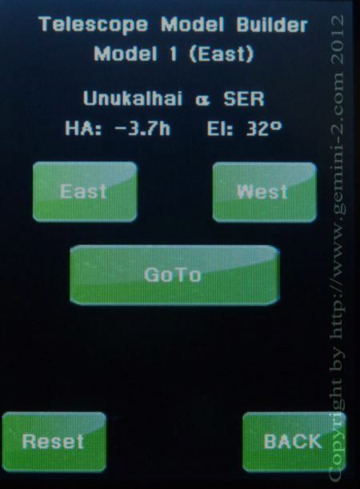

| Interactive Hand-Controller Menus - click on green button to Navigate |
|
This is the Semi Automatic Modeling Function. It will automatically pick a star that should be above the horizon and on the east or west side. (it probably will not be the same star shown in the menu on the left.) If you do not want the star it picks simply hit the East button and it will pick another. NOW the EAST Button will mean you are trying to build an Eastern Model. It will not necessary pick a star in the East. Also the West button will mean you are trying to build a Western Model. It also will not necessary pick a star in the West. Use the Model 1 (East) or the Model 0 (West) to tell which model you are really building. Yes this can be confusing.  Also stars on the west side that are close to the meridian can be added to the East model. If the mount does not pass 90 degrees in Dec (IE do a meridian flip, then you are still building a model on the east. The same holds true when going from a model being built on the west to the east. This is actually designed this way to help refine each model as you move from east to west or west to east. If you are happy with the star it selects, then hit "GOTO". This tutorial does not let you select different stars - so Please hit GOTO. |
Please refer to the rules that the Gemini-2 uses to determine how it reacts to inputs. Please Note: The best way is to start with objects is for the first two to be at least 4 hours or more away from each other, and then add more objects in between them. So far the HC checks only for HA and elevation, not for distances between the objects, but the hour angles are displayed for each object, so you can select it manually. Some times stars seem to be far away from each other despite having similar right ascensions. Doing this will insure that the model converges more quickly to a set of good parameters. In other words, just do not take the stars in the order they appear. Use the East or West button to Select you first two stars on each side as far apart as possible, without causing a meridian flip. If you want to do a star on the other side , just hit the West/East buttons. (if already on the West side and want to do a star on the East, Select East. If on the east and want to do a star on the west, select West.) (Note: This will not select the other model, it will only select a star on the other side. If you hit the West or East button and the mount thinks it can reach it without doing a meridian flip, it will try and go to it without the flip. You really need to make sure that your limits are set. If they are not, then the mount could hit and do damage to your telescope or mount. Also notice that (continued below) To change to the other model, the mount must do a meridian flip or move the DEC through either the north or south pole. Select a star with a HA that is +/- 4.6 or greater. This almost always insures a meridian flip and a switch to the other model. The mount will only do a meridian flip if it is safe to do so. The HA angle and El are shown for the selected GOTO target. Now if you want to select the other model, Let's make it easy ... just push the other side (East/West) button of the model builder screen until you get a star offered that is at 4.6 to 6 hours in HA or more and the flip is almost guaranteed. Also to ensure good meridian flips, while building a model use an alignment star that is close to zenith that can be added to the model on both sides of the meridian. This will help with better GOTO's and better meridian flips If you have software that can Plate Solve, You can use it to build a model. See G2FAQ#28 |